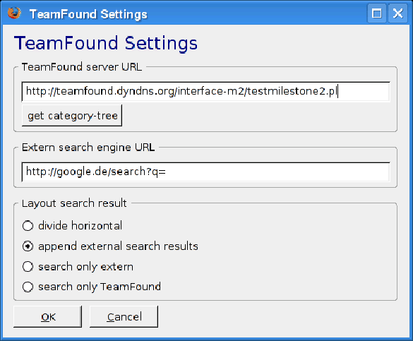
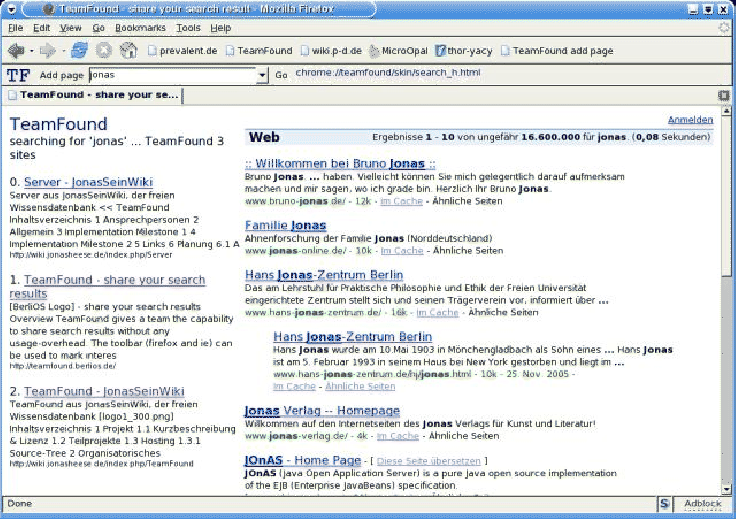

Abbildung 4.3:
Firefox-Toolbar Settings Dialog (v0.8, Milestone 2)
|  |
Abbildung 4.4:
Firefox-Toolbar Suchergebnis (v0.4, Milestone 1)
|  |
Das originale Changelog in englischer Sprache der Firefox-Toolbar befindet sich im Anhang changelog.
Die wichtigsten Funktionen der Toolbar sind:
-
- onLoad
- Initialisiert die Toolbar: Lädt die gespeicherten lokalen Einstellungen und fragt den Kategorien-Baum vom Server ab. Diese Funktion wird über einen Event-Handler automatisch vom Firefox-Browser aufgerufen, sobald dieser geladen wird.
- loadCategories
- Stellt einen XMLHttpRequest an den Server, und definiert onLoadCategoriesFinished als Callback-Funktion der Anfrage.
- onLoadCategoriesFinished
- Wird aufgerufen wenn der Server eine Antwort auf das Kommando getcategories gibt. Auf Basis dieser Antwort wird das Kategorien-Menü gelöscht und die Basis-Informationen wie der Server-Name aus der XML-Antwort ausgelesen. Danach wird die Funktion addCategory aufgerufen, die rekursiv alle Kategorien durchläuft und einen entsprechenden Menü-Baum in der Toolbar aufbaut.
- onSettings
- Event-Handler wenn auf den 'TF' Button oben links in der Toolbar geklickt wird. Diese Funktion öffnet den Einstellungen-Dialog.
- onSearch
- Diese Funktion startet eine Suchanfrage, und wird aufgerufen wenn in dem Kategorien-Baum 'Search' oder der 'Go' Button angeklickt werden. Die
 return
return -Taste wenn der Fokus auf dem Eingabefeld der Kategorien ist ruft ebenfalls diese Funktion auf. OnSearch überprüft daraufhin die Einstellungen, und leitet die Suchanfrage entsprechend an die Funktionen myGotoUrl oder an myTeamFoundSearch und myExternSearch weiter. Je nach Einstellung wird das HTML-Template zur Anzeige der Suchergebnisse search_h.html für eine horizontale Verteilung bzw. search_v.html für eine vertikale Verteilung der Suchergebnisse geladen.
-Taste wenn der Fokus auf dem Eingabefeld der Kategorien ist ruft ebenfalls diese Funktion auf. OnSearch überprüft daraufhin die Einstellungen, und leitet die Suchanfrage entsprechend an die Funktionen myGotoUrl oder an myTeamFoundSearch und myExternSearch weiter. Je nach Einstellung wird das HTML-Template zur Anzeige der Suchergebnisse search_h.html für eine horizontale Verteilung bzw. search_v.html für eine vertikale Verteilung der Suchergebnisse geladen.
- myGotoUrl
- Lädt ganz einfach die angegebene URL im aktiven Tab des Browser.
- myTeamFoundSearch
- Erstellt einen XMLHttpRequest and den TeamFound Server entsprechend den übergebenen Suchwörtern und registriert onTeamFoundSearchFinished als Callback-Funktion.
- myExternSearch
- Erstellt einen XMLHttpRequest an eine externe Suchmaschiene entsprechend den übergebenen Suchwörtern und registriert onExternSearchFinished als Callback-Funktion.
- onAddPage
- Erstellt einen XMLHttpRequest an den TeamFound Server um die aktuell im Browser angezeigte Seite hinzuzufügen und registriert onAddPageFinished als Callback-Funktion.
- onAddPageFinished
- Wertet die Antwort des Server aus und zeigt dem Benutzer eine entsprechende Meldung an.
- onExternSearchFinished
- Such in dem (schon geladenen) Template nach der HTML-Tag-ID ''teamfound-result-two'' und fügt an dieser Stelle die Antwort als innerHTML ein.
- addCategory
- Fügt an das übergebene Menu-Element die Einträge ''Search'', ''Add'' und ''Select as default'' für die ebenfalls übergebene Kategorie an. Für jede existierende Unterkategorie wird ein menupopup-Eintrag erstellt und diese Funktion jeweils rekursiv wieder aufgerufen.
- onTeamFoundSearchFinished
- Sucht in dem Ergebnis-Template nach der HTML-Tag-ID teamfound-result-one und fügt das TeamFound Ergebnis an dieser Stelle als innerHTML ein.
Jan Kechel
2006-04-28